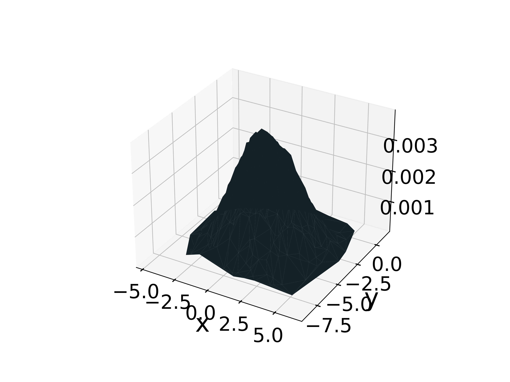
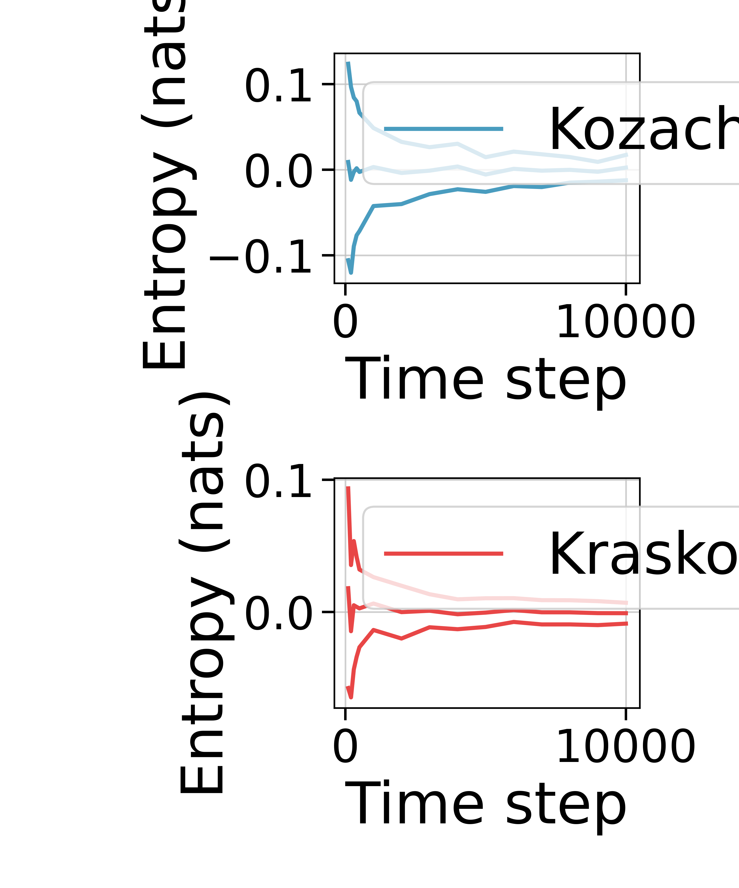
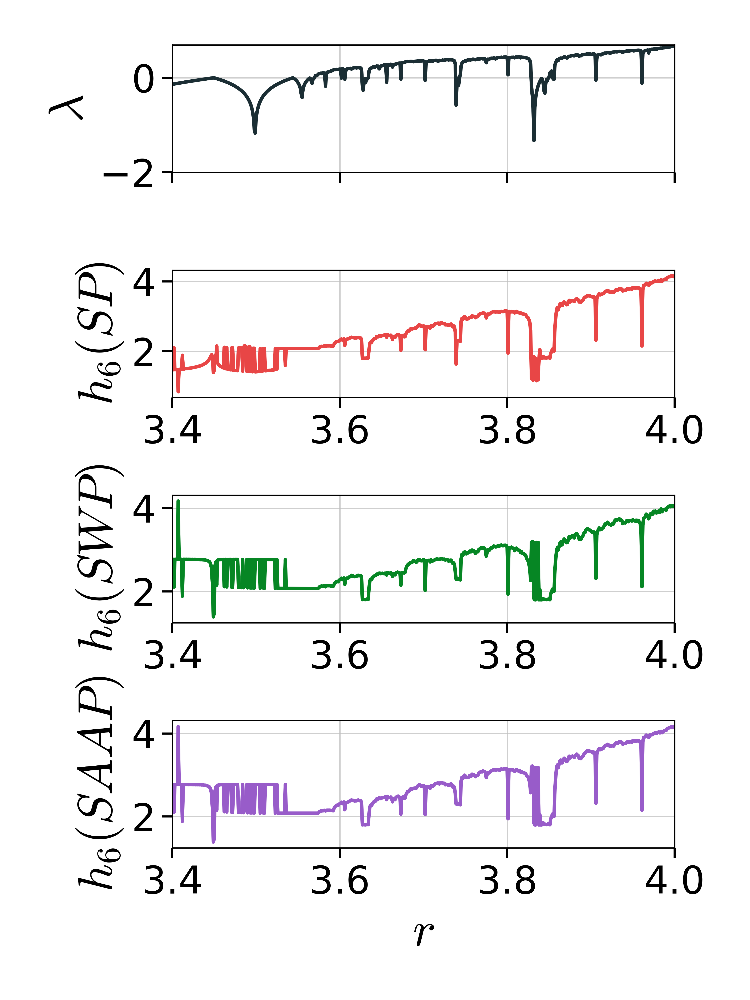
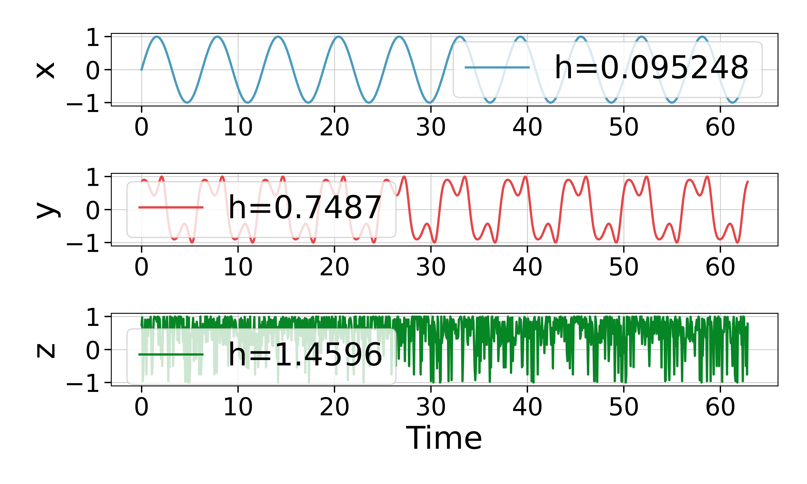

Probabilities Estimators
In this page we list the various estimators (and further functions) that can be used to obtain probabilities representing a given dataset, or entropies directly. See Entropies & Probabilities for more.
Visitation frequency (binning)
Entropies.VisitationFrequency — TypeVisitationFrequency(r::RectangularBinning) <: BinningProbabilitiesEstimatorA probability estimator based on binning data into rectangular boxes dictated by the binning scheme r.
Example
# Construct boxes by dividing each coordinate axis into 5 equal-length chunks.
b = RectangularBinning(5)
# A probabilities estimator that, when applied a dataset, computes visitation frequencies
# over the boxes of the binning, constructed as describedon the previous line.
est = VisitationFrequency(b)See also: RectangularBinning.
Specifying binning/boxes
Entropies.RectangularBinning — TypeRectangularBinning(ϵ) <: RectangularBinningSchemeInstructions for creating a rectangular box partition using the binning scheme ϵ. Binning instructions are deduced from the type of ϵ.
Rectangular binnings may be automatically adjusted to the data in which the RectangularBinning is applied, as follows:
ϵ::Intdivides each coordinate axis intoϵequal-length intervals, extending the upper bound 1/100th of a bin size to ensure all points are covered.ϵ::Float64divides each coordinate axis into intervals of fixed sizeϵ, starting from the axis minima until the data is completely covered by boxes.ϵ::Vector{Int}divides the i-th coordinate axis intoϵ[i]equal-length intervals, extending the upper bound 1/100th of a bin size to ensure all points are covered.ϵ::Vector{Float64}divides the i-th coordinate axis into intervals of fixed sizeϵ[i], starting from the axis minima until the data is completely covered by boxes.
Rectangular binnings may also be specified on arbitrary min-max ranges.
ϵ::Tuple{Vector{Tuple{Float64,Float64}},Int64}creates intervals along each coordinate axis from ranges indicated by a vector of(min, max)tuples, then divides each coordinate axis into an integer number of equal-length intervals. Note: this does not ensure that all points are covered by the data (points outside the binning are ignored).
Example 1: Grid deduced automatically from data (partition guaranteed to cover data points)
Flexible box sizes
The following binning specification finds the minima/maxima along each coordinate axis, then split each of those data ranges (with some tiny padding on the edges) into 10 equal-length intervals. This gives (hyper-)rectangular boxes, and works for data of any dimension.
using Entropies
RectangularBinning(10)Now, assume the data consists of 2-dimensional points, and that we want a finer grid along one of the dimensions than over the other dimension.
The following binning specification finds the minima/maxima along each coordinate axis, then splits the range along the first coordinate axis (with some tiny padding on the edges) into 10 equal-length intervals, and the range along the second coordinate axis (with some tiny padding on the edges) into 5 equal-length intervals. This gives (hyper-)rectangular boxes.
using Entropies
RectangularBinning([10, 5])Fixed box sizes
The following binning specification finds the minima/maxima along each coordinate axis, then split the axis ranges into equal-length intervals of fixed size 0.5 until the all data points are covered by boxes. This approach yields (hyper-)cubic boxes, and works for data of any dimension.
using Entropies
RectangularBinning(0.5)Again, assume the data consists of 2-dimensional points, and that we want a finer grid along one of the dimensions than over the other dimension.
The following binning specification finds the minima/maxima along each coordinate axis, then splits the range along the first coordinate axis into equal-length intervals of size 0.3, and the range along the second axis into equal-length intervals of size 0.1 (in both cases, making sure the data are completely covered by the boxes). This approach gives a (hyper-)rectangular boxes.
using Entropies
RectangularBinning([0.3, 0.1])Example 2: Custom grids (partition not guaranteed to cover data points):
Assume the data consists of 3-dimensional points (x, y, z), and that we want a grid that is fixed over the intervals [x₁, x₂] for the first dimension, over [y₁, y₂] for the second dimension, and over [z₁, z₂] for the third dimension. We when want to split each of those ranges into 4 equal-length pieces. Beware: some points may fall outside the partition if the intervals are not chosen properly (these points are simply discarded).
The following binning specification produces the desired (hyper-)rectangular boxes.
using Entropies, DelayEmbeddings
D = Dataset(rand(100, 3));
x₁, x₂ = 0.5, 1 # not completely covering the data, which are on [0, 1]
y₁, y₂ = -2, 1.5 # covering the data, which are on [0, 1]
z₁, z₂ = 0, 0.5 # not completely covering the data, which are on [0, 1]
ϵ = [(x₁, x₂), (y₁, y₂), (z₁, z₂)], 4 # [interval 1, interval 2, ...], n_subdivisions
RectangularBinning(ϵ)CountOccurrences (counting)
Entropies.CountOccurrences — TypeCountOccurrences <: CountingBasedProbabilityEstimatorA probabilities/entropy estimator based on straight-forward counting of distinct elements in a univariate time series or multivariate dataset. From these counts, construct histograms. Sum-normalize histograms to obtain probability distributions.
Kernel density
Entropies.NaiveKernel — TypeNaiveKernel(ϵ::Real, method::KernelEstimationMethod = TreeDistance()) <: ProbabilitiesEstimatorEstimate probabilities/entropy using a "naive" kernel density estimation approach (KDE), as discussed in Prichard and Theiler (1995) [PrichardTheiler1995].
Probabilities $P(\mathbf{x}, \epsilon)$ are assigned to every point $\mathbf{x}$ by counting how many other points occupy the space spanned by a hypersphere of radius ϵ around $\mathbf{x}$, according to:
\[P_i( \mathbf{x}, \epsilon) \approx \dfrac{1}{N} \sum_{s \neq i } K\left( \dfrac{||\mathbf{x}_i - \mathbf{x}_s ||}{\epsilon} \right),\]
where $K(z) = 1$ if $z < 1$ and zero otherwise. Probabilities are then normalized.
Methods
- Tree-based evaluation of distances using
TreeDistance. Faster, but more memory allocation. - Direct evaluation of distances using
DirectDistance. Slower, but less memory allocation. Also works for complex numbers.
Estimation
Probabilities or entropies can be estimated from Datasets.
probabilities(x::AbstractDataset, est::NaiveKernel). Associates a probabilitypto each point inx.genentropy(x::AbstractDataset, est::NaiveKernel). Associate probabilitypto each point inx, then compute the generalized entropy from those probabilities.
Examples
using Entropy, DelayEmbeddings
pts = Dataset([rand(5) for i = 1:10000]);
ϵ = 0.2
est_direct = NaiveKernel(ϵ, DirectDistance())
est_tree = NaiveKernel(ϵ, TreeDistance())
p_direct = probabilities(pts, est_direct)
p_tree = probabilities(pts, est_tree)
# Check that both methods give the same probabilities
all(p_direct .== p_tree)See also: DirectDistance, TreeDistance.
Distance evaluation methods
Entropies.TreeDistance — TypeTreeDistance(metric::M = Euclidean()) <: KernelEstimationMethodPairwise distances are evaluated using a tree-based approach with the provided metric.
Entropies.DirectDistance — TypeDirectDistance(metric::M = Euclidean()) <: KernelEstimationMethodPairwise distances are evaluated directly using the provided metric.
Example
Here, we draw some random points from a 2D normal distribution. Then, we use kernel density estimation to associate a probability to each point p, measured by how many points are within radius 1.5 of p. Plotting the actual points, along with their associated probabilities estimated by the KDE procedure, we get the following surface plot.
using Distributions, PyPlot, DelayEmbeddings, Entropies
𝒩 = MvNormal([1, -4], 2)
N = 500
D = Dataset(sort([rand(𝒩) for i = 1:N]))
x, y = columns(D)
p = probabilities(D, NaiveKernel(1.5))
figure()
surf(x, y, p.p)
xlabel("x"); ylabel("y")
Nearest neighbor estimators
Kraskov
Entropies.Kraskov — Typek-th nearest neighbour(kNN) based
Kraskov(k::Int = 1, w::Int = 1) <: NearestNeighborEntropyEstimatorEntropy estimator based on k-th nearest neighbor searches[Kraskov2004]. w is the number of nearest neighbors to exclude when searching for neighbours (defaults to 0, meaning that only the point itself is excluded).
This estimator is only available for entropy estimation. Probabilities cannot be obtained directly.
Kozachenko-Leonenko
Entropies.KozachenkoLeonenko — TypeKozachenkoLeonenko(; w::Int = 0) <: NearestNeighborEntropyEstimatorEntropy estimator based on nearest neighbors. This implementation is based on Kozachenko & Leonenko (1987)[KozachenkoLeonenko1987], as described in Charzyńska and Gambin (2016)[Charzyńska2016].
w is the Theiler window (defaults to 0, meaning that only the point itself is excluded when searching for neighbours).
This estimator is only available for entropy estimation. Probabilities cannot be obtained directly.
Example
This example reproduces Figure in Charzyńska & Gambin (2016)[Charzyńska2016]. Both estimators nicely converge to the true entropy with increasing time series length. For a uniform 1D distribution $U(0, 1)$, the true entropy is 0 (red line).
using DynamicalSystems, PyPlot
import Distributions: Uniform, Normal
Ns = [100:100:500; 1000:1000:10000]
Ekl = Vector{Vector{Float64}}(undef, 0)
Ekr = Vector{Vector{Float64}}(undef, 0)
est_nn = KozachenkoLeonenko(w = 0)
# with k = 1, Kraskov is virtually identical to KozachenkoLeonenko, so pick a higher
# number of neighbors
est_knn = Kraskov(w = 0, k = 3)
nreps = 50
for N in Ns
kl = Float64[]
kr = Float64[]
for i = 1:nreps
pts = Dataset([rand(Uniform(0, 1), 1) for i = 1:N]);
push!(kl, genentropy(pts, est_nn))
# with k = 1 almost identical
push!(kr, genentropy(pts, est_knn))
end
push!(Ekl, kl)
push!(Ekr, kr)
end
# Plot
using PyPlot, StatsBase
f = figure(figsize = (5,6))
ax = subplot(211)
px = PyPlot.plot(Ns, mean.(Ekl); color = "C1", label = "KozachenkoLeonenko");
PyPlot.plot(Ns, mean.(Ekl) .+ StatsBase.std.(Ekl); color = "C1", label = "");
PyPlot.plot(Ns, mean.(Ekl) .- StatsBase.std.(Ekl); color = "C1", label = "");
xlabel("Time step"); ylabel("Entropy (nats)"); legend()
ay = subplot(212)
py = PyPlot.plot(Ns, mean.(Ekr); color = "C2", label = "Kraskov");
PyPlot.plot(Ns, mean.(Ekr) .+ StatsBase.std.(Ekr); color = "C2", label = "");
PyPlot.plot(Ns, mean.(Ekr) .- StatsBase.std.(Ekr); color = "C2", label = "");
xlabel("Time step"); ylabel("Entropy (nats)"); legend()
tight_layout()
Permutation (symbolic)
Entropies.SymbolicPermutation — TypeSymbolicPermutation(; τ = 1, m = 3, lt = Entropies.isless_rand) <: ProbabilityEstimator
SymbolicWeightedPermutation(; τ = 1, m = 3, lt = Entropies.isless_rand) <: ProbabilityEstimator
SymbolicAmplitudeAwarePermutation(; τ = 1, m = 3, A = 0.5, lt = Entropies.isless_rand) <: ProbabilityEstimatorSymbolic, permutation-based probabilities/entropy estimators.
Uses embedding dimension $m = 3$ with embedding lag $\tau = 1$ by default. The minimum dimension $m$ is 2 (there are no sorting permutations of single-element state vectors).
Repeated values during symbolization
In the original implementation of permutation entropy [BandtPompe2002], equal values are ordered after their order of appearance, but this can lead to erroneous temporal correlations, especially for data with low-amplitude resolution [Zunino2017]. Here, we resolve this issue by letting the user provide a custom "less-than" function. The keyword lt accepts a function that decides which of two state vector elements are smaller. If two elements are equal, the default behaviour is to randomly assign one of them as the largest (lt = Entropies.isless_rand). For data with low amplitude resolution, computing probabilities multiple times using the random approach may reduce these erroneous effects.
To get the behaviour described in Bandt and Pompe (2002), use lt = Base.isless).
Properties of original signal preserved
SymbolicPermutation: Preserves ordinal patterns of state vectors (sorting information). This implementation is based on Bandt & Pompe et al. (2002)[BandtPompe2002] and Berger et al. (2019) [Berger2019].SymbolicWeightedPermutation: LikeSymbolicPermutation, but also encodes amplitude information by tracking the variance of the state vectors. This implementation is based on Fadlallah et al. (2013)[Fadlallah2013].SymbolicAmplitudeAwarePermutation: LikeSymbolicPermutation, but also encodes amplitude information by considering a weighted combination of absolute amplitudes of state vectors, and relative differences between elements of state vectors. See description below for explanation of the weighting parameterA. This implementation is based on Azami & Escudero (2016) [Azami2016].
Probability estimation
Univariate time series
To estimate probabilities or entropies from univariate time series, use the following methods:
probabilities(x::AbstractVector, est::SymbolicProbabilityEstimator). Constructs state vectors fromxusing embedding lagτand embedding dimensionm, symbolizes state vectors, and computes probabilities as (weighted) relative frequency of symbols.genentropy(x::AbstractVector, est::SymbolicProbabilityEstimator; α=1, base = 2)computes probabilities by callingprobabilities(x::AbstractVector, est), then computer the order-αgeneralized entropy to the given base.
Speeding up repeated computations
A pre-allocated integer symbol array s can be provided to save some memory allocations if the probabilities are to be computed for multiple data sets.
Note: it is not the array that will hold the final probabilities that is pre-allocated, but the temporary integer array containing the symbolized data points. Thus, if provided, it is required that length(x) == length(s) if x is a Dataset, or length(s) == length(x) - (m-1)τ if x is a univariate signal that is to be embedded first.
Use the following signatures (only works for SymbolicPermutation).
probabilities!(s::Vector{Int}, x::AbstractVector, est::SymbolicPermutation) → ps::Probabilities
probabilities!(s::Vector{Int}, x::AbstractDataset, est::SymbolicPermutation) → ps::ProbabilitiesMultivariate datasets
Although not dealt with in the original paper describing the estimators, numerically speaking, permutation entropies can also be computed for multivariate datasets with dimension ≥ 2 (but see caveat below). Such datasets may be, for example, preembedded time series. Then, just skip the delay reconstruction step, compute and symbols directly from the $L$ existing state vectors $\{\mathbf{x}_1, \mathbf{x}_2, \ldots, \mathbf{x_L}\}$.
probabilities(x::AbstractDataset, est::SymbolicProbabilityEstimator). Compute ordinal patterns of the state vectors ofxdirectly (without doing any embedding), symbolize those patterns, and compute probabilities as (weighted) relative frequencies of symbols.genentropy(x::AbstractDataset, est::SymbolicProbabilityEstimator). Computes probabilities from symbol frequencies usingprobabilities(x::AbstractDataset, est::SymbolicProbabilityEstimator), then computes the order-αgeneralized (permutation) entropy to the given base.
Caveat: A dynamical interpretation of the permutation entropy does not necessarily hold if computing it on generic multivariate datasets. Method signatures for Datasets are provided for convenience, and should only be applied if you understand the relation between your input data, the numerical value for the permutation entropy, and its interpretation.
Description
All symbolic estimators use the same underlying approach to estimating probabilities.
Embedding, ordinal patterns and symbolization
Consider the $n$-element univariate time series $\{x(t) = x_1, x_2, \ldots, x_n\}$. Let $\mathbf{x_i}^{m, \tau} = \{x_j, x_{j+\tau}, \ldots, x_{j+(m-1)\tau}\}$ for $j = 1, 2, \ldots n - (m-1)\tau$ be the $i$-th state vector in a delay reconstruction with embedding dimension $m$ and reconstruction lag $\tau$. There are then $N = n - (m-1)\tau$ state vectors.
For an $m$-dimensional vector, there are $m!$ possible ways of sorting it in ascending order of magnitude. Each such possible sorting ordering is called a motif. Let $\pi_i^{m, \tau}$ denote the motif associated with the $m$-dimensional state vector $\mathbf{x_i}^{m, \tau}$, and let $R$ be the number of distinct motifs that can be constructed from the $N$ state vectors. Then there are at most $R$ motifs; $R = N$ precisely when all motifs are unique, and $R = 1$ when all motifs are the same.
Each unique motif $\pi_i^{m, \tau}$ can be mapped to a unique integer symbol $0 \leq s_i \leq M!-1$. Let $S(\pi) : \mathbb{R}^m \to \mathbb{N}_0$ be the function that maps the motif $\pi$ to its symbol $s$, and let $\Pi$ denote the set of symbols $\Pi = \{ s_i \}_{i\in \{ 1, \ldots, R\}}$.
Probability computation
SymbolicPermutation
The probability of a given motif is its frequency of occurrence, normalized by the total number of motifs (with notation from [Fadlallah2013]),
\[p(\pi_i^{m, \tau}) = \dfrac{\sum_{k=1}^N \mathbf{1}_{u:S(u) = s_i} \left(\mathbf{x}_k^{m, \tau} \right) }{\sum_{k=1}^N \mathbf{1}_{u:S(u) \in \Pi} \left(\mathbf{x}_k^{m, \tau} \right)} = \dfrac{\sum_{k=1}^N \mathbf{1}_{u:S(u) = s_i} \left(\mathbf{x}_k^{m, \tau} \right) }{N},\]
where the function $\mathbf{1}_A(u)$ is the indicator function of a set $A$. That is, $\mathbf{1}_A(u) = 1$ if $u \in A$, and $\mathbf{1}_A(u) = 0$ otherwise.
SymbolicAmplitudeAwarePermutation
Amplitude-aware permutation entropy is computed analogously to regular permutation entropy but probabilities are weighted by amplitude information as follows.
\[p(\pi_i^{m, \tau}) = \dfrac{\sum_{k=1}^N \mathbf{1}_{u:S(u) = s_i} \left( \mathbf{x}_k^{m, \tau} \right) \, a_k}{\sum_{k=1}^N \mathbf{1}_{u:S(u) \in \Pi} \left( \mathbf{x}_k^{m, \tau} \right) \,a_k} = \dfrac{\sum_{k=1}^N \mathbf{1}_{u:S(u) = s_i} \left( \mathbf{x}_k^{m, \tau} \right) \, a_k}{\sum_{k=1}^N a_k}.\]
The weights encoding amplitude information about state vector $\mathbf{x}_i = (x_1^i, x_2^i, \ldots, x_m^i)$ are
\[a_i = \dfrac{A}{m} \sum_{k=1}^m |x_k^i | + \dfrac{1-A}{d-1} \sum_{k=2}^d |x_{k}^i - x_{k-1}^i|,\]
with $0 \leq A \leq 1$. When $A=0$ , only internal differences between the elements of $\mathbf{x}_i$ are weighted. Only mean amplitude of the state vector elements are weighted when $A=1$. With, $0<A<1$, a combined weighting is used.
SymbolicWeightedPermutation
Weighted permutation entropy is also computed analogously to regular permutation entropy, but adds weights that encode amplitude information too:
\[p(\pi_i^{m, \tau}) = \dfrac{\sum_{k=1}^N \mathbf{1}_{u:S(u) = s_i} \left( \mathbf{x}_k^{m, \tau} \right) \, w_k}{\sum_{k=1}^N \mathbf{1}_{u:S(u) \in \Pi} \left( \mathbf{x}_k^{m, \tau} \right) \,w_k} = \dfrac{\sum_{k=1}^N \mathbf{1}_{u:S(u) = s_i} \left( \mathbf{x}_k^{m, \tau} \right) \, w_k}{\sum_{k=1}^N w_k}.\]
The weighted permutation entropy is equivalent to regular permutation entropy when weights are positive and identical ($w_j = \beta \,\,\, \forall \,\,\, j \leq N$ and $\beta > 0)$. Weights are dictated by the variance of the state vectors.
Let the aritmetic mean of state vector $\mathbf{x}_i$ be denoted by
\[\mathbf{\hat{x}}_j^{m, \tau} = \frac{1}{m} \sum_{k=1}^m x_{j + (k+1)\tau}.\]
Weights are then computed as
\[w_j = \dfrac{1}{m}\sum_{k=1}^m (x_{j+(k+1)\tau} - \mathbf{\hat{x}}_j^{m, \tau})^2.\]
Note: in equation 7, section III, of the original paper, the authors write
\[w_j = \dfrac{1}{m}\sum_{k=1}^m (x_{j-(k-1)\tau} - \mathbf{\hat{x}}_j^{m, \tau})^2.\]
But given the formula they give for the arithmetic mean, this is not the variance of $\mathbf{x}_i$, because the indices are mixed: $x_{j+(k-1)\tau}$ in the weights formula, vs. $x_{j+(k+1)\tau}$ in the arithmetic mean formula. This seems to imply that amplitude information about previous delay vectors are mixed with mean amplitude information about current vectors. The authors also mix the terms "vector" and "neighboring vector" (but uses the same notation for both), making it hard to interpret whether the sign switch is a typo or intended. Here, we use the notation above, which actually computes the variance for $\mathbf{x}_i$.
Entropy computation
The generalized order-α Renyi entropy[Rényi1960] can be computed over the probability distribution of symbols as $H(m, \tau, \alpha) = \dfrac{\alpha}{1-\alpha} \log \left( \sum_{j=1}^R p_j^\alpha \right)$. Permutation entropy, as described in Bandt and Pompe (2002), is just the limiting case as $α \to1$, that is $H(m, \tau) = - \sum_j^R p(\pi_j^{m, \tau}) \ln p(\pi_j^{m, \tau})$.
Note: Do not confuse the order of the generalized entropy (α) with the order m of the permutation entropy (which controls the symbol size). Permutation entropy is usually estimated with α = 1, but the implementation here allows the generalized entropy of any dimension to be computed from the symbol frequency distribution.
Example
This example reproduces an example from Bandt and Pompe (2002), where the permutation entropy is compared with the largest Lyapunov exponents from time series of the chaotic logistic map. Entropy estimates using SymbolicWeightedPermutation and SymbolicAmplitudeAwarePermutation are added here for comparison.
using DynamicalSystems, PyPlot
ds = Systems.logistic()
rs = 3.4:0.001:4
N_lyap, N_ent = 100000, 10000
m, τ = 6, 1 # Symbol size/dimension and embedding lag
# Generate one time series for each value of the logistic parameter r
lyaps = Float64[]
hs_perm = Float64[]
hs_wtperm = Float64[]
hs_ampperm = Float64[]
base = Base.MathConstants.e
for r in rs
ds.p[1] = r
push!(lyaps, lyapunov(ds, N_lyap))
x = trajectory(ds, N_ent) # time series
hperm = Entropies.genentropy(x, SymbolicPermutation(m = m, τ = τ), base = base)
hwtperm = Entropies.genentropy(x, SymbolicWeightedPermutation(m = m, τ = τ), base = base)
hampperm = Entropies.genentropy(x, SymbolicAmplitudeAwarePermutation(m = m, τ = τ), base = base)
push!(hs_perm, hperm); push!(hs_wtperm, hwtperm); push!(hs_ampperm, hampperm)
end
f = figure(figsize = (6, 8))
a1 = subplot(411)
plot(rs, lyaps); ylim(-2, log(2)); ylabel("\$\\lambda\$")
a1.axes.get_xaxis().set_ticklabels([])
xlim(rs[1], rs[end]);
a2 = subplot(412)
plot(rs, hs_perm; color = "C2"); xlim(rs[1], rs[end]);
xlabel(""); ylabel("\$h_6 (SP)\$")
a3 = subplot(413)
plot(rs, hs_wtperm; color = "C3"); xlim(rs[1], rs[end]);
xlabel(""); ylabel("\$h_6 (SWP)\$")
a4 = subplot(414)
plot(rs, hs_ampperm; color = "C4"); xlim(rs[1], rs[end]);
xlabel("\$r\$"); ylabel("\$h_6 (SAAP)\$")
tight_layout()
Time-scale (wavelet)
Entropies.TimeScaleMODWT — TypeTimeScaleMODWT <: WaveletProbabilitiesEstimator
TimeScaleMODWT(wl::Wavelets.WT.OrthoWaveletClass = Wavelets.WT.Daubechies{12}())Apply the maximal overlap discrete wavelet transform (MODWT) to a signal, then compute probabilities/entropy from the energies at different wavelet scales. This implementation is based on Rosso et al. (2001)[Rosso2001]. Optionally specify a wavelet to be used.
The probability p[i] is the relative/total energy for the i-th wavelet scale.
Example
Manually picking a wavelet is done as follows.
using Entropies, Wavelets
N = 200
a = 10
t = LinRange(0, 2*a*π, N)
x = sin.(t .+ cos.(t/0.1)) .- 0.1;
# Pick a wavelet (if no wavelet provided, defaults to Wavelets.WL.Daubechies{12}())
wl = Wavelets.WT.Daubechies{12}()
# Compute the probabilities (relative energies) at the different wavelet scales
probabilities(x, TimeScaleMODWT(wl))If no wavelet provided, the default is Wavelets.WL.Daubechies{12}()).
Example
The scale-resolved wavelet entropy should be lower for very regular signals (most of the energy is contained at one scale) and higher for very irregular signals (energy spread more out across scales).
using DynamicalSystems, PyPlot
N, a = 1000, 10
t = LinRange(0, 2*a*π, N)
x = sin.(t);
y = sin.(t .+ cos.(t/0.5));
z = sin.(rand(1:15, N) ./ rand(1:10, N))
est = TimeScaleMODWT()
h_x = genentropy(x, est)
h_y = genentropy(y, est)
h_z = genentropy(z, est)
f = figure(figsize = (10,6))
ax = subplot(311)
px = plot(t, x; color = "C1", label = "h=$(h=round(h_x, sigdigits = 5))");
ylabel("x"); legend()
ay = subplot(312)
py = plot(t, y; color = "C2", label = "h=$(h=round(h_y, sigdigits = 5))");
ylabel("y"); legend()
az = subplot(313)
pz = plot(t, z; color = "C3", label = "h=$(h=round(h_z, sigdigits = 5))");
ylabel("z"); xlabel("Time"); legend()
tight_layout()
Utility methods
Some convenience functions for symbolization are provided.
Entropies.encode_as_bin — Functionencode_as_bin(point, reference_point, edgelengths) → Vector{Int}Encode a point into its integer bin labels relative to some reference_point (always counting from lowest to highest magnitudes), given a set of box edgelengths (one for each axis). The first bin on the positive side of the reference point is indexed with 0, and the first bin on the negative side of the reference point is indexed with -1.
See also: joint_visits, marginal_visits.
Example
using Entropies
refpoint = [0, 0, 0]
steps = [0.2, 0.2, 0.3]
encode_as_bin(rand(3), refpoint, steps)Entropies.joint_visits — Functionjoint_visits(points, binning_scheme::RectangularBinning) → Vector{Vector{Int}}Determine which bins are visited by points given the rectangular binning scheme ϵ. Bins are referenced relative to the axis minima, and are encoded as integers, such that each box in the binning is assigned a unique integer array (one element for each dimension).
For example, if a bin is visited three times, then the corresponding integer array will appear three times in the array returned.
See also: marginal_visits, encode_as_bin.
Example
using DelayEmbeddings, Entropies
pts = Dataset([rand(5) for i = 1:100]);
joint_visits(pts, RectangularBinning(0.2))Entropies.marginal_visits — Functionmarginal_visits(points, binning_scheme::RectangularBinning, dims) → Vector{Vector{Int}}Determine which bins are visited by points given the rectangular binning scheme ϵ, but only along the desired dimensions dims. Bins are referenced relative to the axis minima, and are encoded as integers, such that each box in the binning is assigned a unique integer array (one element for each dimension in dims).
For example, if a bin is visited three times, then the corresponding integer array will appear three times in the array returned.
See also: joint_visits, encode_as_bin.
Example
using DelayEmbeddings, Entropies
pts = Dataset([rand(5) for i = 1:100]);
# Marginal visits along dimension 3 and 5
marginal_visits(pts, RectangularBinning(0.3), [3, 5])
# Marginal visits along dimension 2 through 5
marginal_visits(pts, RectangularBinning(0.3), 2:5)marginal_visits(joint_visits, dims) → Vector{Vector{Int}}If joint visits have been precomputed using joint_visits, marginal visits can be returned directly without providing the binning again using the marginal_visits(joint_visits, dims) signature.
See also: joint_visits, encode_as_bin.
Example
using DelayEmbeddings, Entropies
pts = Dataset([rand(5) for i = 1:100]);
# First compute joint visits, then marginal visits along dimensions 1 and 4
jv = joint_visits(pts, RectangularBinning(0.2))
marginal_visits(jv, [1, 4])
# Marginals along dimension 2
marginal_visits(jv, 2)Entropies.symbolize — Functionsymbolize(x::AbstractVector{T}, est::SymbolicPermutation) where {T} → Vector{Int}
symbolize!(s, x::AbstractVector{T}, est::SymbolicPermutation) where {T} → Vector{Int}If x is a univariate time series, first x create a delay reconstruction of x using embedding lag est.τ and embedding dimension est.m, then symbolizing the resulting state vectors with encode_motif.
Optionally, the in-place symbolize! can be used to put symbols in a pre-allocated integer vector s, where length(s) == length(x)-(est.m-1)*est.τ.
symbolize(x::AbstractDataset{m, T}, est::SymbolicPermutation) where {m, T} → Vector{Int}
symbolize!(s, x::AbstractDataset{m, T}, est::SymbolicPermutation) where {m, T} → Vector{Int}If x is an m-dimensional dataset, then motif lengths are determined by the dimension of the input data, and x is symbolized by converting each m-dimensional state vector as a unique integer in the range $1, 2, \ldots, m-1$, using encode_motif.
Optionally, the in-place symbolize! can be used to put symbols in a pre-allocated integer vector s, where length(s) == length(s).
Examples
Symbolize a 7-dimensional dataset. Motif lengths (or order of the permutations) are inferred to be 7.
using DelayEmbeddings, Entropies
D = Dataset([rand(7) for i = 1:1000])
s = symbolize(D, SymbolicPermutation())Symbolize a univariate time series by first embedding it in dimension 5 with embedding lag 2. Motif lengths (or order of the permutations) are therefore 5.
using DelayEmbeddings, Entropies
n = 5000
x = rand(n)
s = symbolize(x, SymbolicPermutation(m = 5, τ = 2))The integer vector s now has length n-(m-1)*τ = 4992, and each s[i] contains the integer symbol for the ordinal pattern of state vector x[i].
Entropies.encode_motif — Functionencode_motif(x, m::Int = length(x)) → s::IntEncode the length-m motif x (a vector of indices that would sort some vector v in ascending order) into its unique integer symbol $s \in \{1, 2, \ldots, m - 1 \}$, using Algorithm 1 in Berger et al. (2019)[Berger2019].
Example
v = rand(5)
# The indices that would sort `v` in ascending order. This is now a permutation
# of the index permutation (1, 2, ..., 5)
x = sortperm(v)
# Encode this permutation as an integer.
encode_motif(x)- PrichardTheiler1995Prichard, D., & Theiler, J. (1995). Generalized redundancies for time series analysis. Physica D: Nonlinear Phenomena, 84(3-4), 476-493.
- Kraskov2004Kraskov, A., Stögbauer, H., & Grassberger, P. (2004). Estimating mutual information. Physical review E, 69(6), 066138.
- Charzyńska2016Charzyńska, A., & Gambin, A. (2016). Improvement of the k-NN entropy estimator with applications in systems biology. Entropy, 18(1), 13.
- KozachenkoLeonenko1987Kozachenko, L. F., & Leonenko, N. N. (1987). Sample estimate of the entropy of a random vector. Problemy Peredachi Informatsii, 23(2), 9-16.
- Charzyńska2016Charzyńska, A., & Gambin, A. (2016). Improvement of the k-NN entropy estimator with applications in systems biology. Entropy, 18(1), 13.
- BandtPompe2002Bandt, Christoph, and Bernd Pompe. "Permutation entropy: a natural complexity measure for time series." Physical review letters 88.17 (2002): 174102.
- Berger2019Berger, Sebastian, et al. "Teaching Ordinal Patterns to a Computer: Efficient Encoding Algorithms Based on the Lehmer Code." Entropy 21.10 (2019): 1023.
- Fadlallah2013Fadlallah, Bilal, et al. "Weighted-permutation entropy: A complexity measure for time series incorporating amplitude information." Physical Review E 87.2 (2013): 022911.
- Rényi1960A. Rényi, Proceedings of the fourth Berkeley Symposium on Mathematics, Statistics and Probability, pp 547 (1960)
- Azami2016Azami, H., & Escudero, J. (2016). Amplitude-aware permutation entropy: Illustration in spike detection and signal segmentation. Computer methods and programs in biomedicine, 128, 40-51.
- Fadlallah2013Fadlallah, Bilal, et al. "Weighted-permutation entropy: A complexity measure for time series incorporating amplitude information." Physical Review E 87.2 (2013): 022911.
- Zunino2017Zunino, L., Olivares, F., Scholkmann, F., & Rosso, O. A. (2017). Permutation entropy based time series analysis: Equalities in the input signal can lead to false conclusions. Physics Letters A, 381(22), 1883-1892.
- Rosso2001Rosso, O. A., Blanco, S., Yordanova, J., Kolev, V., Figliola, A., Schürmann, M., & Başar, E. (2001). Wavelet entropy: a new tool for analysis of short duration brain electrical signals. Journal of neuroscience methods, 105(1), 65-75.
- Berger2019Berger, Sebastian, et al. "Teaching Ordinal Patterns to a Computer: Efficient Encoding Algorithms Based on the Lehmer Code." Entropy 21.10 (2019): 1023.
- Berger2019Berger, Sebastian, et al. "Teaching Ordinal Patterns to a Computer: Efficient Encoding Algorithms Based on the Lehmer Code." Entropy 21.10 (2019): 1023.